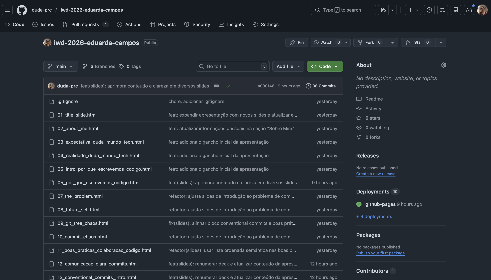

Repositório real de exemplo
Momento ao vivo:
este repositório no GitHub
>
Tudo que vimos —
commits
,
PRs
e
estratégias de merge
— aparece no dia a dia de um projeto típico.
>
Referência na web:
github.com/duda-prc/iwd-2026-eduarda-campos
